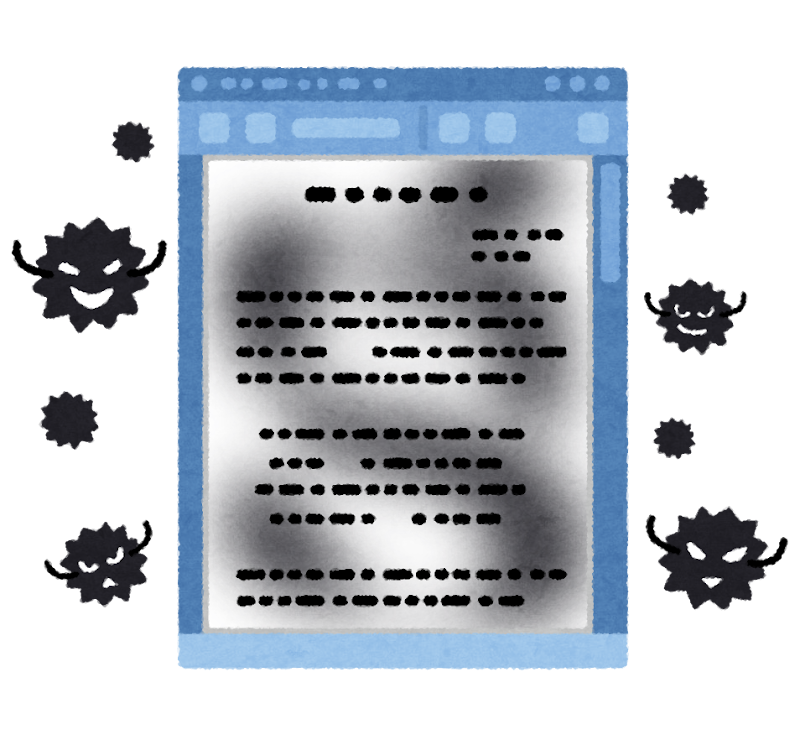
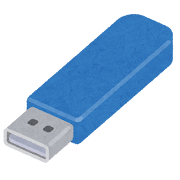

[対象者]3.高校生 [作成者]三浦 [問題種別]02.事例型
[番号]01_01_02_04_02_3_2_1 [分野]01.情報と社会 [分類]01.モラルと順法/02.法律/04.不正指令電磁的記録作成罪
学校のコンピュータがウイルスソフトに汚染されていることを発見した。ウイルスソフトをUSB上に隔離して、学校のコンピュータからは消去した。
 
1.ウイルスソフトの保持は禁止されているので、隔離したものも消去しないといけません。
2.隔離に成功したなら問題ありません。
3.コンピュータが除染されたので問題ありません。
4.逆コンパイルしてソースコードで保管すれば、ウイルスソフトを保持していても問題ありません。
1
2
3
4